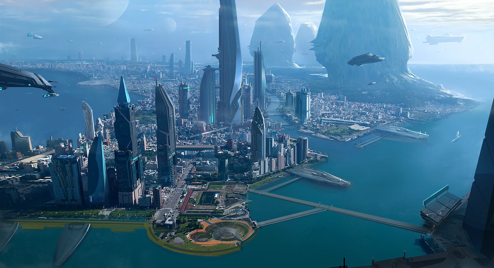

SYSTEM: TERRA

Excurs - System: Terra
Terra, das leuchtende Juwel des United Empire of Earth, hat große Fortschritte gemacht, das kulturelle Zentrum der Menschheit zu werden. Während eingefleischte Erd-Loyalisten diesen Anspruch abstreiten würden, gibt es keinen Zweifel, dass Terra den Finger am Puls des Empires hat. Vom wachsenden Strom der Megakonzerne, die ihre Hauptquartiere nach Terra verlegen, bis hin zum Einfluss der lokalen Musikszene auf die Popkultur kommt Terra einem selbstproduzierten Rivalen der Erde unbestreitbar am nächsten.
Das Terra System, damals noch 342A genannt, wurde zuerst im Jahre 2508 als Teil des Projekts Far Star kartographiert. Als die ersten Scannerdaten eine natürliche Supererde im grünen Band, der habitablen Zone des Sterns zeigten, war deren Kolonisierung fast schon beschlossene Sache. Der Planet – von seinem Entdeckerteam schnell Terra getauft, was ein Name war, der später am gesamten System haften bleiben sollte – fing die Faszination vieler in den UNE ein, da er einer unberührten Version unserer Erde erstaunlich ähnlich sah. Siedler wie auch Megakonzerne wollten sich möglichst bald ein Stück dieses opulenten, grünen und ressourcenreichen Planeten sichern. Was die Faszination für Terra noch weiter steigen ließ, war die Entdeckung massiver Steinruinen kurz nach Beginn der Kolonisierung der südlichen Landmasse von Terra III, die eindeutig auf intelligentes Leben hinwiesen.
Diese Entdeckung erschuf eines der größten und meistdebattierten archäologischen Mysterien unserer Zeit. Nicht lange nach seiner Entdeckung bemerkten die ersten Bewohner des Systems, dass dieses in doppelter Hinsicht ein Segen war. Nicht nur beherbergte Terra eine Welt, die für Menschen ideal geeignet war, es war auch noch reich an Sprungpunkten. Bis jetzt wurden sieben Sprungpunkte kartographiert und Wissenschaftler hegen große Hoffnungen, dass ein achter bald entdeckt werden wird. Dank seiner Lage und seiner zahlreichen Verbindnungen ist Terra in vier Jahrhunderten zu einem großen Zentrum für Geschäfte, Kultur, Politik und Handel angewachsen.

„Jeder mag von den tollen Oberklasse-Restaurants schwärmen, die man in Terra Prime findet. Aber für zwei Credits gibt es nicht viel auf Terra, das an den Geschmack eines heißen Pirozhki frisch vom Verkaufsstand eines Straßenhändlers rankommt, während gerade die Sonne über New Austin aufgeht. Das, mein Freund, ist eine Mahlzeit, die du so schnell nicht vergessen wirst.“ – Senator Keros Albervar, im Horizons Magazine, Ausgabe Juli 2942
Das Terra System, damals noch 342A genannt, wurde zuerst im Jahre 2508 als Teil des Projekts Far Star kartographiert. Als die ersten Scannerdaten eine natürliche Supererde im grünen Band, der habitablen Zone des Sterns zeigten, war deren Kolonisierung fast schon beschlossene Sache. Der Planet – von seinem Entdeckerteam schnell Terra getauft, was ein Name war, der später am gesamten System haften bleiben sollte – fing die Faszination vieler in den UNE ein, da er einer unberührten Version unserer Erde erstaunlich ähnlich sah. Siedler wie auch Megakonzerne wollten sich möglichst bald ein Stück dieses opulenten, grünen und ressourcenreichen Planeten sichern. Was die Faszination für Terra noch weiter steigen ließ, war die Entdeckung massiver Steinruinen kurz nach Beginn der Kolonisierung der südlichen Landmasse von Terra III, die eindeutig auf intelligentes Leben hinwiesen.
Diese Entdeckung erschuf eines der größten und meistdebattierten archäologischen Mysterien unserer Zeit. Nicht lange nach seiner Entdeckung bemerkten die ersten Bewohner des Systems, dass dieses in doppelter Hinsicht ein Segen war. Nicht nur beherbergte Terra eine Welt, die für Menschen ideal geeignet war, es war auch noch reich an Sprungpunkten. Bis jetzt wurden sieben Sprungpunkte kartographiert und Wissenschaftler hegen große Hoffnungen, dass ein achter bald entdeckt werden wird. Dank seiner Lage und seiner zahlreichen Verbindnungen ist Terra in vier Jahrhunderten zu einem großen Zentrum für Geschäfte, Kultur, Politik und Handel angewachsen.
Aero (Terra I)
Eine harte, steinige Welt, die unglaublich nah am Stern des Systems, Terra Nova, liegt. Obwohl der Planet reich an Ressourcen ist, schlugen die meisten Unternehmungen, diese Ressourcen abzubauen, fehl. Dies lag an den extrem unwirtlichen Oberflächentemperaturen und der langen, 95 Erdtage andauernden Umlaufzeit des Planeten.Pike (Terra II)
Ganz im Gegensatz zu Aero sind die Bergbau-Operationen auf Pike ein Meisterwerk der menschlichen Ingenieurskunst. Der mineralienreiche Planet ist mit Bergbau-Außenposten und Raffinerien übersäht, die für die Expansion Terras unerlässlich sind.Terra (Terra III)
Die Hauptstadt von Terra ist Prime, eine wunderschöne Megastadt, die an einer Bucht gelegen ist. Als ein krasser Gegensatz zur Erde wurde alles in Prime von den ursprünglichen Siedlern geplant, was zu einer besseren Balance zwischen Natur und Zivilisation als auf unserer Heimatwelt führte. Anders als bei vielen Städten liegt der Raumhafen von Prime außerhalb der Stadt, um Lärm und Luftverschmutzung zu reduzieren. Eine Einschienenbahn bringt Besucher zu den beiden Hauptstadtteilen – der funkelnden Innenstadt und der Wohngegend, genannt The Block. Dieser Teil der Stadt wurde aus den ursprünglichen, vorfabrizierten Teilen der Kolonie gebaut und auch wenn viele in Prime ihn als Schandfleck betrachten, so gibt es doch einen starken Widerstand der Bewohner von The Block gegen eine Modernisierung. Terras zweitgrößte Stadt, Quasi, liegt in der südlichen, kälteren Hemisphäre und wurde im Schatten der massiven Ruinen gebaut, die zu Beginn der Besiedlung Terras entdeckt wurden. Quasi gilt als ein größeres Touristenziel als Prime, obwohl auch einige Firmenhauptquartiere in der Region liegen. New Austin, ein weiterer der ursprünglichen Kolonialisierungspunkte, ist das, was auf Terra einer Industriestadt am ehesten gleichkommt. Als Gewerbegebiet, wie es im Buche steht, beheimatet New Austin eine große Anzahl an Firmen wie ORIGIN Jumpworks und das Hauptquartier der Sataball Territorial League. Die Lebenskosten sind hier geringer als in Prime, was zu einer Art „Arbeitergesellschaft“-Einstellung geführt hat. Das Zentrum der Stadt ist die Old Hall, eine ehemalige Versammlungsstätte der Bergbau-Gilde, die nun von Fabrikbesitzern, Piloten, Frachtkapitänen und Schiffseignern bevölkert wird.Gen (Terra IV)
Oft wird übersehen, dass Terras Schwesterwelt Gen ebenfalls besiedelt ist. Dieser kleinere Planet, der übrigens der äußerste des Systems ist, wurde ein knappes Jahrhundert nach Terras erster Besiedelung terraformt. Der Planet ist recht gut bevölkert, da er jedoch überwiegend Militärbasen, imperiale Verwaltungsgebäude und Wohnbereiche beherbergt, sind nahezu alle Bewohner Regierungsangestellte. Trotz wiederholter Versuche, war Gens Bitten um Repräsentation im Senat bislang ohne Erfolg. Gegner führen an, dass eine weitere bürokratische Aufsicht den Interessen des Empires im System zuwiderlaufen könnte, während Pro-Terra-Aktivisten der Meinung sind, der Senat würde sich hüten, dem Terra-System weiteren politischen Einfluss zu gewähren.
Reisewarnung
Reisende im Terra-System werden dazu ermutigt, den Verkehrsbestimmungen rund um die drei großen Militär- und Sicherheitsstationen besondere Aufmerksamkeit zu schenken. Schiffe, die sich INS Reilly, IAS Hammett oder ICS Evolen nähern, sollten eine gültige Freigabe der Stationen besitzen oder einen großen Bogen um diese Stationen zu machen, um unerwünschte Vorfälle zu vermeiden.Ein Flüstern im Wind
„Unsere einzige Hoffnung, unsere einzige Chance, eine Zukunft zu erschaffen, die unsere Kinder und die Kinder unserer Kinder verdienen, ist die Unabhängigkeit Terras zu erlangen.“ – Governeur Assan Kieren, Rede auf einer politischen Kundgebung, 03.12.2638„Jeder mag von den tollen Oberklasse-Restaurants schwärmen, die man in Terra Prime findet. Aber für zwei Credits gibt es nicht viel auf Terra, das an den Geschmack eines heißen Pirozhki frisch vom Verkaufsstand eines Straßenhändlers rankommt, während gerade die Sonne über New Austin aufgeht. Das, mein Freund, ist eine Mahlzeit, die du so schnell nicht vergessen wirst.“ – Senator Keros Albervar, im Horizons Magazine, Ausgabe Juli 2942